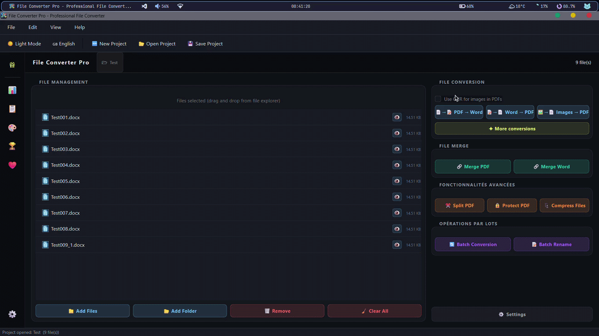

Convert anything. Offline. Always.
Documents, images, audio, video, use one tool instead of five browser tabs. Your files never leave your machine. Not even for a second.

What's inside
Everything in one place
No browser tabs. No accounts. No uploads. Drag, pick a format, done.
100% Offline
Your files never leave your machine. No telemetry, no internet required, no exceptions — not even during conversion.
Batch Processing
Drop an entire folder and convert everything at once. Great for when you have 30 PNGs that all need to become JPEGs.
Auto Dark / Light Mode
Reads your Windows theme and switches instantly. Matches whatever you have on, no toggle needed.
Statistics Dashboard
Animated charts track your conversion history, volume over time, and which formats you reach for most.
Achievements
Streaks, milestones, animated unlocks. Optional — turn it off in Settings if you just want the converter.
Windows Context Menu
Right-click any file in Explorer → Convert with FCP. The app opens, converts, and closes on its own.
Multi-Engine Fallback
Chains FFmpeg, LibreOffice, Pandoc, and native libraries. If one tool isn't installed, the next one picks up.
Project Files
Save a conversion setup as .fcproj. Double-click later to restore the whole session instantly.
Multi-Language
Ships with French and English. Add any other language by dropping a .lang JSON file — no code needed.
Supported formats
What it converts
Documents, images, audio, video — all handled from one window.
All conversions go through Pillow at maximum quality with EXIF metadata preserved.
Powered by FFmpeg. Requires FFmpeg to be installed on your machine — FCP detects it automatically.
Powered by FFmpeg. Requires FFmpeg to be installed on your machine — FCP detects it automatically.
How it works
Four steps, done
Download & Run
No install wizard if you go portable. One .exe — double-click, you're in. Under a minute.
Add Your Files
Drag them onto the window, onto the exe itself, or right-click in Explorer. Pick whichever feels natural.
Pick a Format
Select the output format and hit Convert. Batch mode works exactly the same way.
Done
Converted files are saved directly to your output folder. You can also enable Windows notifications to know when a conversion finishes, especially useful for large batches.
vs. the alternatives
How it fits
Online tools are great for one-off conversions. FCP is for people who convert files regularly and don't want to keep uploading them somewhere.
| File Converter Pro | CloudConvert / Zamzar | HandBrake | Format Factory | PDF24 | |
|---|---|---|---|---|---|
| Offline / no upload | |||||
| Documents | PDF only | ||||
| Images | |||||
| Audio & Video | Video only | ||||
| Free, no limits | 25/day free tier | ||||
| System-aware dark/light theme | N/A | ||||
| Conversion history & stats |
Built by one person while studying
FCP is a solo project built in parallel with my studies. There's no big team or company behind it — just me creating and improving a tool I genuinely use myself. If it helps you out, a coffee or a star on GitHub is always appreciated.
Ready to stop uploading your files?
One download. No account. No expiry. Runs entirely on your machine, as long as you want it to.